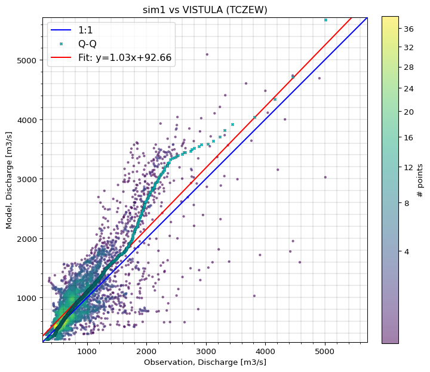
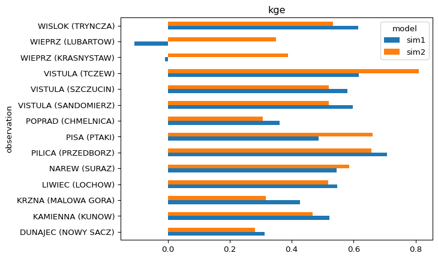

from pathlib import Path
import matplotlib.pyplot as plt
import numpy as np
import pandas as pd
import modelskill as msHydrology example from the Vistula catchment in Poland
The Vistula catchment is the largest catchment in Poland, with an area of 194,424 km2. This notebook shows how a hydrological model can evaluated using ModelSkill.
fldr = Path("../data/Vistula")
df = pd.read_csv(fldr / "stations.csv", index_col=0)
df| Station | Long | Lat | Area | |
|---|---|---|---|---|
| Id | ||||
| 6458010 | VISTULA (TCZEW) | 18.80556 | 54.08722 | 193922.9 |
| 6458500 | VISTULA (WARSAW (WARSZAWA)) | 21.03250 | 52.24750 | 84945.1 |
| 6458753 | PILICA (PRZEDBORZ) | 19.87528 | 51.08944 | 2550.1 |
| 6458715 | WIEPRZ (LUBARTOW) | 22.64361 | 51.49806 | 6389.8 |
| 6458713 | WIEPRZ (KRASNYSTAW) | 23.17667 | 50.98528 | 3010.2 |
| 6458520 | KAMIENNA (KUNOW) | 21.27889 | 50.96194 | 1110.4 |
| 6458460 | VISTULA (SANDOMIERZ) | 21.74611 | 50.67250 | 31809.9 |
| 6458450 | VISTULA (SZCZUCIN) | 21.07722 | 50.32694 | 23869.3 |
| 6458406 | DUNAJEC (NOWY SACZ) | 20.68722 | 49.62722 | 4337.4 |
| 6158100 | POPRAD (CHMELNICA) | 20.73023 | 49.28918 | 1262.0 |
| 6458950 | WISLOK (TRYNCZA) | 22.54722 | 50.16222 | 3523.6 |
| 6458863 | PISA (PTAKI) | 21.79250 | 53.39306 | 3575.7 |
| 6458805 | NAREW (SURAZ) | 22.95500 | 52.94889 | 3425.3 |
| 6458924 | LIWIEC (LOCHOW) | 21.67833 | 52.51000 | 2471.4 |
| 6458555 | KRZNA (MALOWA GORA) | 23.46750 | 52.10361 | 3041.9 |
def get_comparer(df, mods, id):
"""Get a Comparer object for a given model and station id"""
q = ms.Quantity(name="Discharge", unit="m3/s")
# create Observation object
fp = fldr / mods[0] / f"{id}.csv"
dfd = pd.read_csv(fp, index_col=0, parse_dates=True)
o = ms.PointObservation(dfd, item="Qobs", name=df.loc[id].Station,
x=df.loc[id].Long, y=df.loc[id].Lat, quantity=q)
# create ModelResult objects
mm = []
for m in mods:
fp = fldr / m / f"{id}.csv"
dfd = pd.read_csv(fp, index_col=0, parse_dates=True)
mm.append(ms.PointModelResult(dfd, item="Qsim", name=m, quantity=q))
return ms.match(obs=o, mod=mm)Compare a single observation with two model results
cmp = get_comparer(df, ["sim1","sim2"], df.index[0])
cmp<Comparer>
Quantity: Discharge [m3/s]
Observation: VISTULA (TCZEW), n_points=3653
Model(s):
0: sim1
1: sim2Plots
timeseries, scatter, boxplot, hist, kde, qq, taylor
cmp.plot.timeseries();
cmp.sel(model="sim1").plot.scatter();
Summary statistics
# set default metrics
ms.options.metrics.list = ["kge", "cc"]cmp.skill().round(3)| n | kge | cc | ||
|---|---|---|---|---|
| model | observation | |||
| sim1 | VISTULA (TCZEW) | 3653 | 0.617 | 0.794 |
| sim2 | VISTULA (TCZEW) | 3653 | 0.809 | 0.829 |
Statistics aggregated by month
cmp.data["month"] = cmp.time.to_series().dt.monthcmp.skill(by=["model","month"]) #["kge"].plot.bar();| observation | n | kge | cc | ||
|---|---|---|---|---|---|
| model | month | ||||
| sim1 | 1 | VISTULA (TCZEW) | 310 | 0.385138 | 0.440905 |
| 2 | VISTULA (TCZEW) | 283 | 0.578280 | 0.803975 | |
| 3 | VISTULA (TCZEW) | 310 | 0.454622 | 0.730561 | |
| 4 | VISTULA (TCZEW) | 300 | 0.509017 | 0.834517 | |
| 5 | VISTULA (TCZEW) | 310 | 0.575944 | 0.697614 | |
| 6 | VISTULA (TCZEW) | 300 | 0.344820 | 0.493330 | |
| 7 | VISTULA (TCZEW) | 310 | 0.052140 | 0.298390 | |
| 8 | VISTULA (TCZEW) | 310 | 0.219232 | 0.667376 | |
| 9 | VISTULA (TCZEW) | 300 | 0.376622 | 0.552289 | |
| 10 | VISTULA (TCZEW) | 310 | 0.626824 | 0.717061 | |
| 11 | VISTULA (TCZEW) | 300 | 0.643888 | 0.741710 | |
| 12 | VISTULA (TCZEW) | 310 | 0.288263 | 0.452674 | |
| sim2 | 1 | VISTULA (TCZEW) | 310 | 0.580579 | 0.622109 |
| 2 | VISTULA (TCZEW) | 283 | 0.844779 | 0.887547 | |
| 3 | VISTULA (TCZEW) | 310 | 0.669936 | 0.767161 | |
| 4 | VISTULA (TCZEW) | 300 | 0.764530 | 0.809858 | |
| 5 | VISTULA (TCZEW) | 310 | 0.487875 | 0.655435 | |
| 6 | VISTULA (TCZEW) | 300 | 0.496136 | 0.695364 | |
| 7 | VISTULA (TCZEW) | 310 | 0.235510 | 0.540092 | |
| 8 | VISTULA (TCZEW) | 310 | 0.269188 | 0.773781 | |
| 9 | VISTULA (TCZEW) | 300 | 0.526274 | 0.741995 | |
| 10 | VISTULA (TCZEW) | 310 | 0.719504 | 0.863399 | |
| 11 | VISTULA (TCZEW) | 300 | 0.721616 | 0.840079 | |
| 12 | VISTULA (TCZEW) | 310 | 0.506460 | 0.560932 |
cmp.skill(by=["model","month"])["kge"].plot.line()
plt.xlabel("Month")
plt.xticks(np.arange(1,13), ["Jan","Feb","Mar","Apr","May","Jun","Jul","Aug","Sep","Oct","Nov","Dec"]);
Compare multiple observations with two model results
# loop through all stations in df and create a Comparer for each
cmps = []
for id in df.index:
try:
cmps.append(get_comparer(df, ["sim1","sim2"], id))
except ValueError as e:
pass
cc = ms.ComparerCollection(cmps)
cc <ComparerCollection>
Comparers:
0: VISTULA (TCZEW) - Discharge [m3/s]
1: PILICA (PRZEDBORZ) - Discharge [m3/s]
2: WIEPRZ (LUBARTOW) - Discharge [m3/s]
3: WIEPRZ (KRASNYSTAW) - Discharge [m3/s]
4: KAMIENNA (KUNOW) - Discharge [m3/s]
5: VISTULA (SANDOMIERZ) - Discharge [m3/s]
6: VISTULA (SZCZUCIN) - Discharge [m3/s]
7: DUNAJEC (NOWY SACZ) - Discharge [m3/s]
8: POPRAD (CHMELNICA) - Discharge [m3/s]
9: WISLOK (TRYNCZA) - Discharge [m3/s]
10: PISA (PTAKI) - Discharge [m3/s]
11: NAREW (SURAZ) - Discharge [m3/s]
12: LIWIEC (LOCHOW) - Discharge [m3/s]
13: KRZNA (MALOWA GORA) - Discharge [m3/s]cc.skill(by=["model","observation"], metrics="kge")["kge"].plot.barh();
Average skill over all stations, weighted by \(\sqrt{area}\).
weights = np.sqrt(df.set_index("Station")["Area"]).to_dict()
weights{'VISTULA (TCZEW)': 440.36677894682293,
'VISTULA (WARSAW (WARSZAWA))': 291.45342681121457,
'PILICA (PRZEDBORZ)': 50.498514829646226,
'WIEPRZ (LUBARTOW)': 79.93622457934825,
'WIEPRZ (KRASNYSTAW)': 54.86528957364574,
'KAMIENNA (KUNOW)': 33.32266495945365,
'VISTULA (SANDOMIERZ)': 178.35330106280625,
'VISTULA (SZCZUCIN)': 154.49692553575298,
'DUNAJEC (NOWY SACZ)': 65.85894016760366,
'POPRAD (CHMELNICA)': 35.52463933666322,
'WISLOK (TRYNCZA)': 59.35991913741123,
'PISA (PTAKI)': 59.79715712306062,
'NAREW (SURAZ)': 58.52606257044805,
'LIWIEC (LOCHOW)': 49.713177327545665,
'KRZNA (MALOWA GORA)': 55.15342237794496}cc.mean_skill(weights=weights).round(3)| n | kge | cc | |
|---|---|---|---|
| model | |||
| sim1 | 51142 | 0.504 | 0.709 |
| sim2 | 51142 | 0.586 | 0.717 |